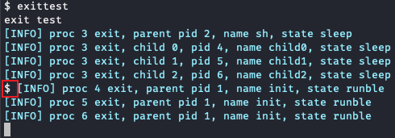

实验实现¶
先分清命令在哪执行
Linux 终端：执行git fetch origin --tags、git checkout syscall、git pull --ff-only origin syscall、make clean、make qemu、make qemu CPUS=1、./grade-lab-syscall yield、make grade。xv6命令行：执行exittest、waittest、yieldtest。GDB命令行：本实验不是硬性要求；如果你想跟踪系统调用过程，可参考 系统调用调试指南 。
1. 准备实验环境¶
1.1 准备 Lab2 代码¶
请先按照 实验概述 3.1：先保存 Lab1，再更新 Lab2 代码 的步骤，保存 Lab1 代码、切换到 syscall 分支，并同步远程仓库中的最新代码。完成后再继续阅读本页。
1.2 先成功启动一次 xv6¶
在 Linux 终端 中执行：
make qemu
进入 xv6 后，先确认你已经能看到 $ 提示符。后面任务一和任务二的手动测试，都在这个 xv6 命令行里完成。
2. 任务一：在 exit 时打印父子进程信息¶
2.1 先看目标结果¶
这题的目标不是“随便打印几行信息”，而是要在 exit 执行流程的合适位置，打印：
- 当前进程退出时的父进程信息；
- 当前进程退出时的每个子进程信息。
手动测试时，在 xv6 命令行输入：
exittest
你应当看到与 实验概述 中类似的结果。
2.2 从 exit(int) 执行流程入手¶
建议你直接打开 kernel/proc.c，顺着 exit(int) 的执行流程往下看。做这题时，至少要关注这几件事：
- 当前进程的父进程信息在哪里；
- 当前进程的子进程是怎样被遍历出来的；
reparent()在什么时候执行；- 进程状态什么时候会变化。
实现时请注意：
- 使用课程提供的
exit_info()输出，不要直接用printf()； - 输出格式要和题目要求保持一致；
- 进程状态按题目要求用小写输出；
- 子进程被重新交给
init之前和之后，观察结果会不同。
2.3 运行 exittest¶
完成后，在 xv6 命令行再次执行：
exittest
如果父进程与子进程信息都能正确打印，且能观察到“孤儿进程被交给 init”这一现象，说明这题基本完成。
一个小提醒
子进程退出的先后顺序可能因为调度而略有不同，但关键语义应该一致。
3. 任务二：为 wait 增加非阻塞选项¶
3.1 先明确这题的语义¶
这题要求你把原来的：
int wait(int *status)
改成：
int wait(int *status, int flags)
语义如下：
flags == 0：和原来一样，阻塞等待；flags == 1：如果此时没有可回收的僵尸子进程，就不要睡眠，直接返回-1。
用户态接口已经帮你改好了，所以这一题主要改内核。
3.2 建议的实现顺序¶
建议按下面顺序做：
- 先在
kernel/defs.h中改wait的函数声明； - 再到
kernel/sysproc.c中修改sys_wait()，把新的flags参数取出来； - 最后到
kernel/proc.c中修改wait()的主体逻辑。
做这题时，最关键的问题其实只有一个：
原来本来要
sleep()的地方，现在在flags == 1时该怎么处理？
此外还要特别注意：
- 如果你在持锁状态下提前返回，记得先释放锁；
- 不要把原有阻塞语义整体破坏掉。
3.3 运行 waittest¶
完成后，在 xv6 命令行执行：
waittest
如果结果和 实验概述 中的示例一致，说明这题基本完成。
4. 任务三：实现 yield 系统调用¶
4.1 先明确这题在做什么¶
这题不是只让你“调用一下现成的 yield() 函数”，而是要你从用户态到内核态，把一个新的系统调用完整接进去，并额外打印调度相关信息。
也就是说，这题同时考你两部分：
- 系统调用接口怎么加；
- 调度相关数据从哪里取。
4.2 检查并补齐系统调用外壳¶
当前 syscall 分支已经提供了一部分外壳，目的是让测试程序能够先参与编译。开始实现前，请先核对这些位置：
user/user.h：已经提供yield的用户态声明；user/usys.pl：已经提供yield对应的entry；kernel/syscall.h：已经提供SYS_yield系统调用号；Makefile：已经把_yieldtest加进UPROGS；kernel/syscall.c：需要补sys_yield的extern声明，并把它加入syscalls[]分发表；kernel/sysproc.c：需要实现sys_yield()。
不要重复定义骨架已经提供的内容；但如果 kernel/syscall.c 和 kernel/sysproc.c 没有补齐，即使用户态入口已经存在，用户程序仍然调不到正确的内核实现。
4.3 再写 sys_yield() 的主体逻辑¶
sys_yield() 中建议依次完成下面几件事：
- 通过
myproc()拿到当前进程； - 打印当前进程
context的地址范围； - 通过
trapframe打印当前进程的用户态pc； - 参考
scheduler()的工作方式 ，从当前进程开始环形遍历全局进程表，寻找下一个RUNNABLE进程； - 打印这个“下一个可运行进程”的
pid和用户态pc； - 最后调用内核已经提供的
yield()，让当前进程真正让出 CPU。
这里有两个细节尤其值得注意：
- 如果要在
sysproc.c中遍历全局进程表proc[]，你需要能访问它的声明； - 遍历进程表时要注意锁的获取和释放，避免把锁带出循环。
关于地址范围
如果 p 是当前进程，那么 &p->context 是这段上下文结构的起始地址，&p->context + 1 表示这段结构末尾的下一个位置。本题采用左闭右开区间 [start, end)；因此测试会检查 end - start == sizeof(struct context)，在当前代码中为 112 字节。
4.4 运行 yieldtest¶
这题的手动测试建议分两步：
第一步，在 Linux 终端 中用单核方式启动 xv6：
make qemu CPUS=1
第二步，进入 xv6 命令行后执行：
yieldtest
之所以建议 CPUS=1，是因为这题输出和调度顺序关系很大。单核时现象更稳定，也更容易和测试脚本对齐。
补充：运行测试与常见问题¶
完成三个任务后，建议在 Linux 终端 中执行：
./grade-lab-syscall yield
make grade
如果你想先手动确认功能，也可以分别进入 xv6 运行：
exittest
waittest
yieldtest
如果提示 /usr/bin/env: 'python': No such file or directory
个别环境里只有 python3，而测试脚本调用的是 python。这时可以执行：
sudo ln -s /usr/bin/python3 /usr/bin/python
建立符号链接后，再重新运行测试命令即可。
5. 任务四：回答问题¶
回答问题
- 阅读
kernel/syscall.c，试解释函数syscall()如何根据系统调用号调用对应的系统调用处理函数（例如sys_fork）？syscall()将具体系统调用的返回值存放在哪里？ - 阅读
kernel/syscall.c，哪些函数用于传递系统调用参数？试解释argraw()函数的含义。 - 阅读
kernel/proc.c和kernel/proc.h，进程控制块存储在哪个数组中？进程控制块中哪个成员指示了进程的状态？一共有哪些状态？ - 在任务一中，为什么子进程（4、5、6 号进程）的输出之前会 稳定地 出现一个
$符号？提示：shell程序（sh.c）在什么时候打印出$？

- 在任务三中，为什么测试时建议指定
CPUS=1？如果 CPU 数量大于 1，输出为什么更容易出现“乱序”或看起来像“乱码”？提示：多核调度和单核调度有什么区别？